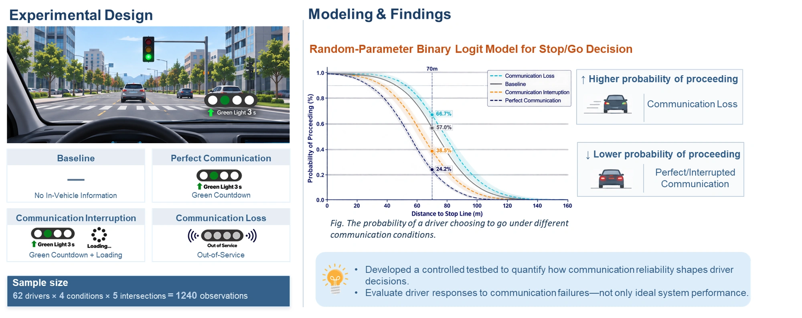

Driver Responses to Unreliable Traffic Information
How do drivers decide whether to stop or proceed when traffic-signal information is interrupted or unavailable? I designed simulator experiments and analyzed responses to different in-vehicle information conditions enabled by cellular vehicle-to-everything (C-V2X) technology.
Drivers responded differently to interrupted and unavailable information, highlighting the need to evaluate connected driving systems under both normal and disrupted conditions.
My Contribution
Accident Analysis & Prevention · 2025 ↗Simulator experiment design and behavioral analysis of driver responses to C-V2X communication conditions.
